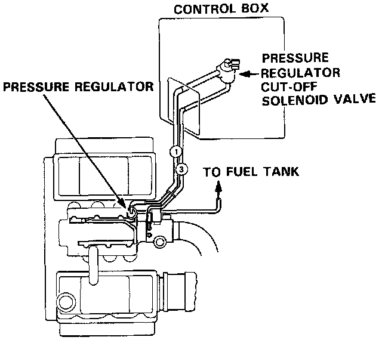
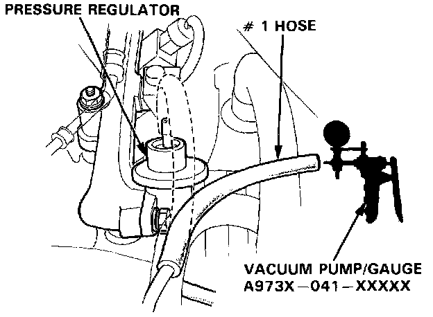
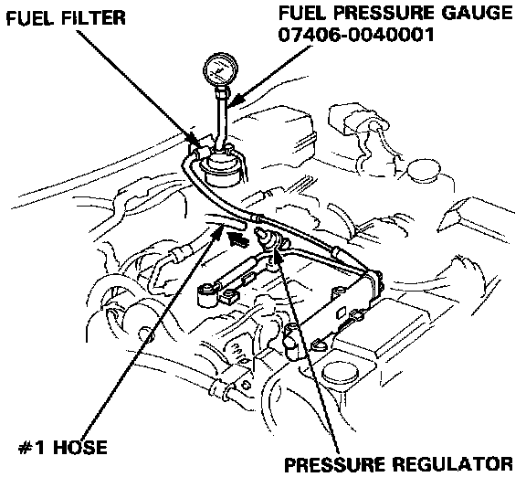
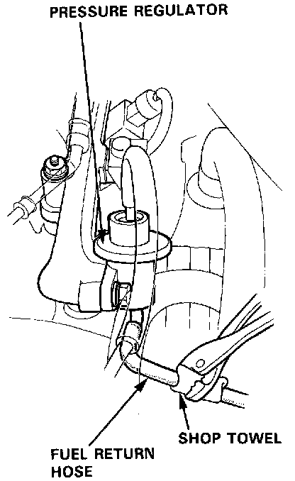

Coupe
Pressure Regulator TestWARNING: Do not smoke during the test. Keep open flames away from your work area.

1. Check the vacuum line for proper connection, cracks, blockage or disconnected hose.

2. Disconnect # 1 vacuum hose from the pressure regulator, and connect a vacuum gauge to the hose.
3. Start the engine and allow to idle.
4. Check for vacuum.
There should be vacuum.
- If there is no vacuum, go to pressure regulator cut-off solenoid valve test II.
5. Stop the engine.
6. Restart the engine.
NOTE:
- Engine coolant temperature must be above 105°C (221°F).
- Intake air temperature must be above 80°C (176°F).
7. Check for vacuum.
There should be no vacuum.
- If there is vacuum, go to pressure regulator cutoff solenoid valve test I.
8. Stop the engine.

9. Attach a pressure gauge to the service port of the fuel filter.
10. Restart the engine and check that the fuel pressure rises by disconnecting #1 vacuum hose from the regulator.
Pressure should be:
250 - 279 kPa (2.55 - 2.85 kg/cm2, 36 - 41 psi)

- If the fuel pressure does not rise, check whether it rises when the return hose is lightly pinched.
- If the pressure does not rise, replace the regulator and retest.